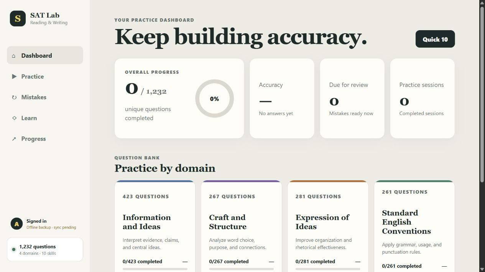
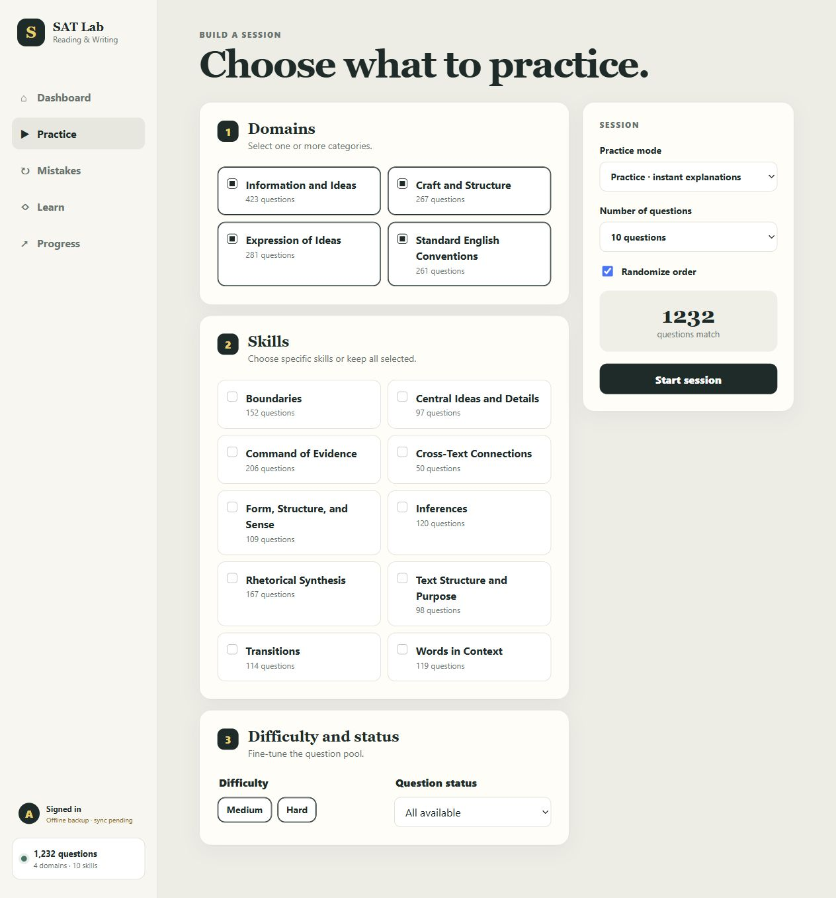
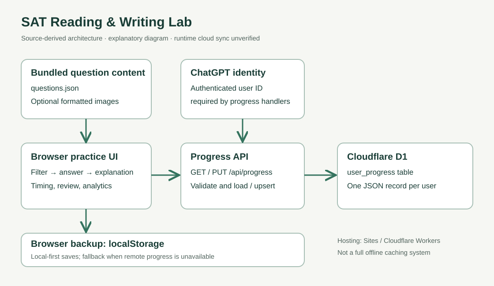
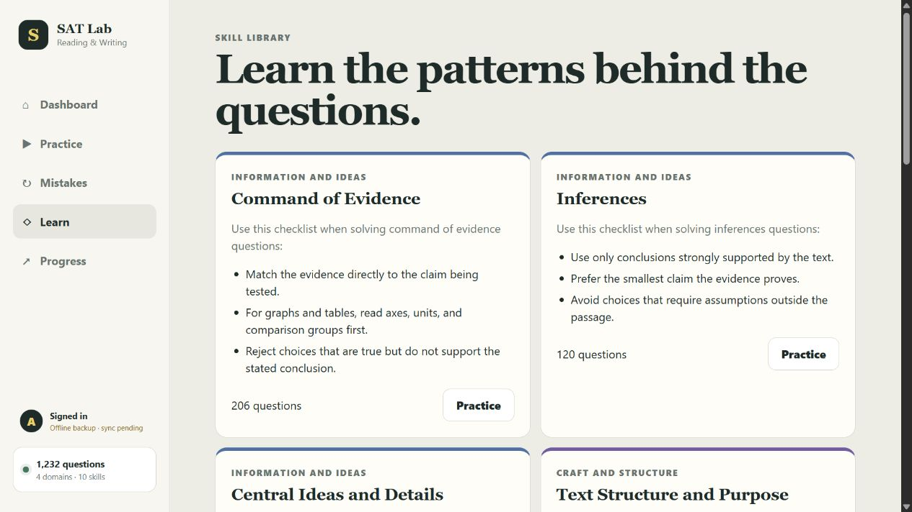

Focused practice
Session setup filters questions by topic, difficulty, and history, including unanswered, incorrect, and bookmarked items.
Skill-based question sets, answer explanations, timed sessions, mistake review, and progress tracking.
The hosted app may require ChatGPT sign-in.
The question sets I was using from Bluebook were exported as PDFs. I wanted to answer questions, check explanations, and revisit mistakes in an interactive app, without paying for another practice platform.
I built SAT Lab to bring those steps into one workflow: choose a skill, practice a set, and return to the questions I missed.

Domain, skill, difficulty, and question history shape the next set. The matching question count makes the selection visible before practice starts.

Session setup filters questions by topic, difficulty, and history, including unanswered, incorrect, and bookmarked items.
Practice mode reveals the correct answer and rationale. A mistake notebook makes missed questions available for another attempt.
Progress views aggregate coverage, accuracy, and recorded response time by domain and skill.
The browser renders question records and manages session state. Progress is saved locally, then synchronized through an authenticated API to a per-user JSON record in Cloudflare D1.

The client retains a browser backup when remote data is unavailable. This is a progress fallback, rather than a full offline application cache.
Some question records support formatted images alongside expandable text, while answer selection remains interactive.
Attempt records store elapsed time. Analytics exclude missing historical timings rather than counting them as zero-second answers.
The skill library puts short solving checklists beside a route into the corresponding question set.

The supplied source inspection counted 1,232 question records across four domains and ten skills. These are content inventory counts, rather than learner outcomes.
The brief documents published status and practice, review, timing, and persistence code. The browser capture session verified navigation through the dashboard, practice setup, and skill library. Answer submission and production persistence were not exercised.
The app grew out of my own PDF-based practice workflow. The screenshots document the interface, rather than score improvement or learner-growth outcomes.
The current implementation stores whole progress snapshots, without per-attempt conflict merging. Account switching, concurrent-device saves, import validation, and time accumulated in background tabs are useful next checks.
The gallery shows the dashboard, setup, and skill library. Question passages and private learner history are not included.